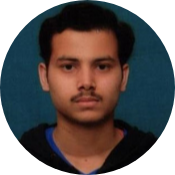

|

|
Suraj Verma
Computer Science Engineering Student at AKTU
I am completing my Bachelor's degree in Computer Science stream from Dr. A.P.J. Abdul Kalam Technical University (APJAKTU) starting from 2019.
As a developer, I enjoy bridging the gap between functionality and design. My goal is to always build applications that are scalable and efficient under the hood while providing engaging, pixel-perfect user experiences. In addition, I am
highly
responsive to client needs and also committed to helping people realize their vision.
Open to opportunities !!! Firstly, I love to solve problems and wants to grow to become a better version of myself with each passing day of my life. I'm a second year computer science student with a passion for cp and web development. Last
, but
not the least :) I just want to learn as much as I can !
|